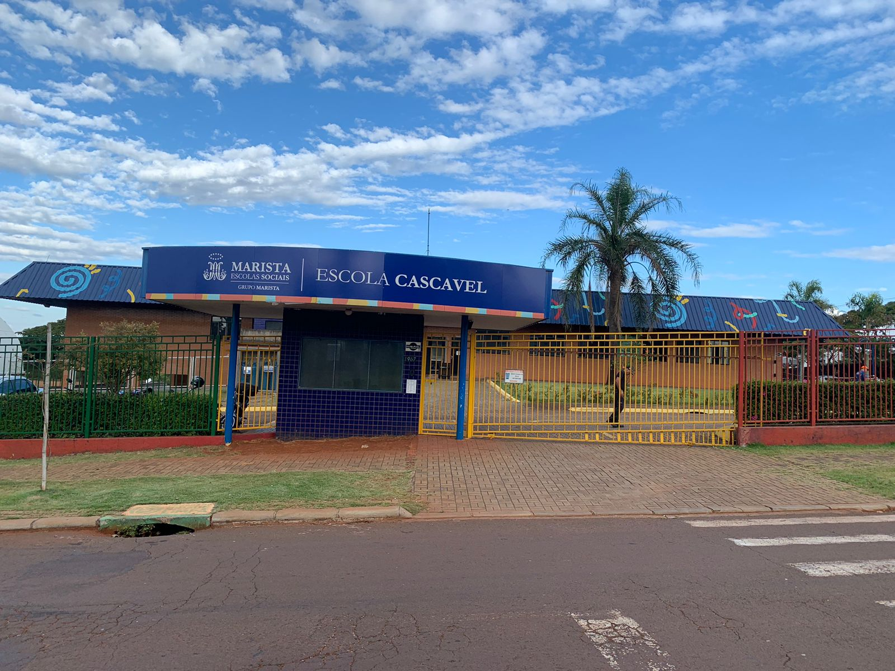

Desde 1998, o Marista Escola Social Cascavel acolhe crianças e adolescentes em situação de vulnerabilidade, oferecendo educação gratuita e de qualidade, com foco no desenvolvimento integral. Com um ambiente seguro, acolhedor e inovador, buscamos transformar vidas através do conhecimento e da convivência solidária.
Promover uma educação inclusiva e de excelência, baseada em valores humanos e sociais.
Ser referência na educação, contribuindo para o desenvolvimento integral dos alunos.
Ética, solidariedade, respeito e inovação são os pilares da nossa escola.